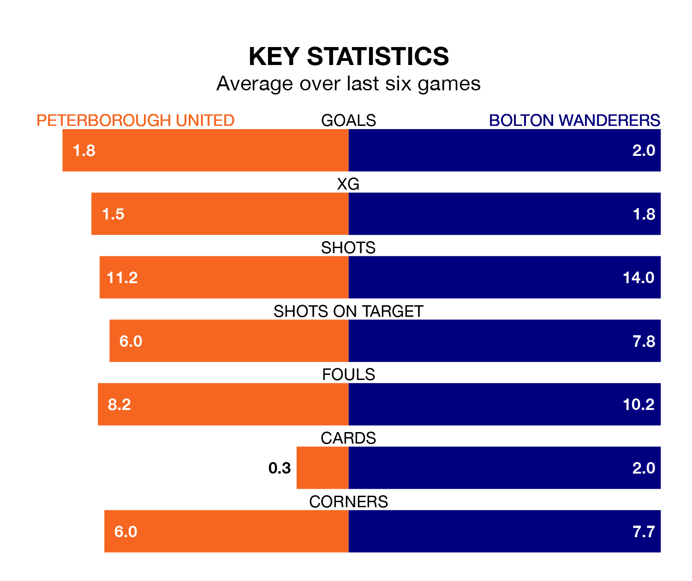

Peterborough United host Bolton Wanderers in Saturday lunchtime's match at the Weston Homes Stadium looking to bounce back from defeat last time out in EFL League One.
The Posh, who sit fourth in the league after 45 games, fell to a 2-0 away defeat to Cheltenham Town on Tuesday.
They face a Bolton side who picked up a win in their last match, a 2-0 victory against Port Vale, and who sit third in the table.
With 86 goals in 45 games so far this season, Peterborough are the league's highest scorers with 1.9 goals per game. And they are conceding at an average rate, letting in 58 goals at a rate of 1.3 per game.
Bolton are also above average scorers, with 1.8 goals per game, compared to a league average of 1.3. They have conceded 1.1 goals per game.
In the last 10 years, Peterborough and Bolton have played each other on six occasions. Peterborough won two of them, Bolton three, and they drew once.
On average, the Posh scored 0.5 goals and Bolton 1.7 in those matches.
Their last meeting was on September 23, when they played out a 1-1 draw.
United's Harrison Burrows is among the league's most creative players, racking up 14 assists in 44 appearances so far this season, and holding second spot in EFL League One's assist charts.
For Wanderers, Josh Sheehan has set up the most goals, having laid on 12 assists in 42 games.
The Posh are in reasonable form in EFL League One, with four wins and two losses from their last six games.
With three wins and three draws over that period, the visitors' form is similar – they have both taken 12 points from 18.
Updated: 07:59 (UTC), 26/04/24